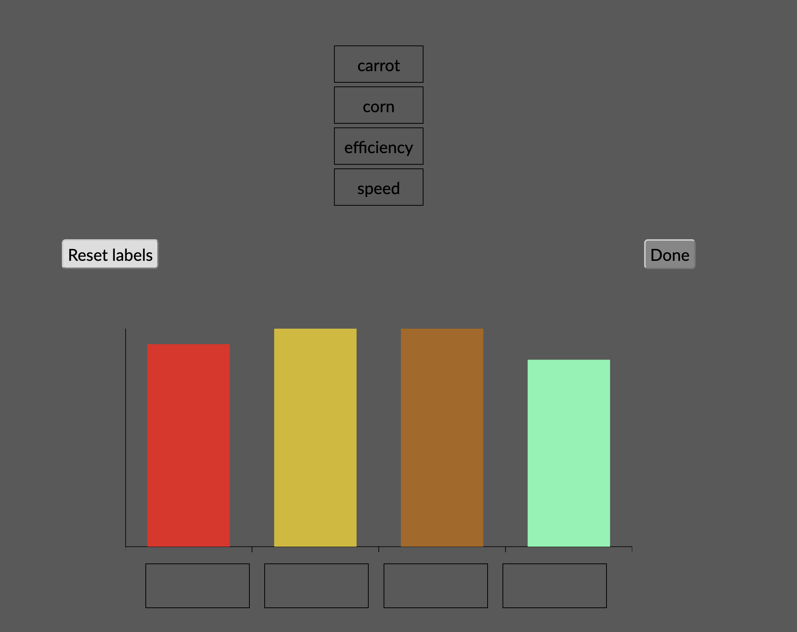

<!DOCTYPE html>
<html lang="en">
<meta http-equiv="Content-Type" content="text/html; charset=UTF-8" />

<head>
    <title>Schloss Lab Experiment</title>
    <!-- Load in the jspsych tools, plugins,and layout -->
    <script src="https://ajax.googleapis.com/ajax/libs/jquery/3.1.0/jquery.min.js" type="text/javascript"></script>


    <!--<script src="https://ajax.googleapis.com/ajax/libs/jqueryui/1.12.1/jquery-ui.min.js" type= "text/javascript"></script>-->
    <script src="js/jquery-ui.js" type="text/javascript"></script>
    <link rel="stylesheet" href="https://code.jquery.com/ui/1.12.1/themes/ui-lightness/jquery-ui.css">
    <script src="data/assignments.json" type="text/javascript"></script>
    <script src="serverComm.js" type="text/javascript"></script>
    <script src="js/jspsych.js"></script>
    <script src="js/jspsych-html-keyboard-response.js"></script>
    <script src="js/jspsych-html-button-response.js"></script>
    <script src="js/jspsych-instructions.js"></script>
    <script src="js/jspsych-call-function.js" type="text/javascript"></script>
    <script src="js/jspsych-fullscreen.js"></script>
    <script src="js/jspsych-survey-text.js"></script>
    <script src="js/jspsych-survey-multi-select.js"></script>
    <script src="js/jspsych-survey-multi-selectMAS.js"></script>
    <script src="js/jspsych-survey-multi-choice.js"></script>
    <link href="js/jspsychMAS.css" rel="stylesheet" type="text/css">
    </link>
    <link href='https://fonts.googleapis.com/css?family=Avenir:400,700' rel='stylesheet' type='text/css'>
    <script src="js/jspsych-html-slider-response.js"></script>
    <script type="text/javascript" src="https://cdn.jsdelivr.net/npm/lodash@4.17.10/lodash.min.js"></script>
    <script type="text/javascript" src="https://cdn.jsdelivr.net/npm/chart.js@2.9.4/dist/Chart.min.js"></script>

    <link rel="stylesheet" href="https://stackpath.bootstrapcdn.com/bootstrap/3.4.1/css/bootstrap.min.css"
        integrity="sha384-HSMxcRTRxnN+Bdg0JdbxYKrThecOKuH5zCYotlSAcp1+c8xmyTe9GYg1l9a69psu" crossorigin="anonymous">

    <!-- Optional theme -->
    <link rel="stylesheet" href="https://stackpath.bootstrapcdn.com/bootstrap/3.4.1/css/bootstrap-theme.min.css"
        integrity="sha384-6pzBo3FDv/PJ8r2KRkGHifhEocL+1X2rVCTTkUfGk7/0pbek5mMa1upzvWbrUbOZ" crossorigin="anonymous">

    <!-- Latest compiled and minified JavaScript -->
    <script src="https://stackpath.bootstrapcdn.com/bootstrap/3.4.1/js/bootstrap.min.js"
        integrity="sha384-aJ21OjlMXNL5UyIl/XNwTMqvzeRMZH2w8c5cRVpzpU8Y5bApTppSuUkhZXN0VxHd"
        crossorigin="anonymous"></script>
    <style>
         /* Add CSS for the loading circle */
         .loader {
            border: 16px solid #f3f3f3; /* Light grey */
            border-top: 16px solid #000000; /* Blue */
            border-radius: 50%;
            width: 120px;
            height: 120px;
            animation: spin 2s linear infinite;
            position: absolute;
            /* top: 60%; */
            /* left: 50%; */
            transform: translate(-50%, -50%);
        }

        @keyframes spin {
            0% { transform: rotate(0deg); }
            100% { transform: rotate(360deg); }
        }

        .loading-container {
            position: relative;
            width:500px;
            height: 100vh;
            display: flex;
            justify-content: center;
            align-items: center;
        }

        .loading-text {
            position: absolute;
            top: 35%;
            left: 50%;
            transform: translate(-50%, -50%);
            font-size: 20px;
            color: black;
        }

    @keyframes spin {
        0% { transform: rotate(0deg); }
        100% { transform: rotate(360deg); }
    }
    </style>


    <script src="js/assignment-inference.js"></script>
</head>

<body style="background-color: #595959;color:black">


    <script type="text/javascript">

        var loading_trial = {
            type: 'html-keyboard-response',
            stimulus: '<div class="loading-container">' +
                      '<div class="loading-text">Please wait while we process your data.</div>' +
                      '<div class="loader"></div>' +
                      '</div>',
            choices: jsPsych.NO_KEYS,
            trial_duration: 5000 // 5 seconds
        };


        const subject_id = jsPsych.randomization.randomID(10); // Create a random ID code for each participant
        const sona_id = jsPsych.data.getURLVariable('id');

        //Get mTurk/sonaID
        var urlvar = jsPsych.data.urlVariables();
      

        window.onbeforeunload = function () {
            return "If you leave or refresh the page, you will not be able to finish the experiment. Are you sure you want to leave?";
        };


        // Dummy timeline

        var timeline = [];


        // Initial welcome screen

        var initial_screen = {
            type: 'html-button-response',
            stimulus: 'Welcome to our experiment!' +
                '<p>At the bottom of this screen, you will see a button that says "Begin Experiment".' +
                '<br>Please only click that button when you are ready to complete the 30 minute experiment in one sitting.</p>' +
                '<p> Once you click that button, it will not be possible to restart the experiment.',
            choices: ['Begin Experiment']
        }
        timeline.push(initial_screen);
        timeline.push({
            type: 'fullscreen',
            fullscreen_mode: true
        })


        // function saveData(data_object) {
        // var xhr = new XMLHttpRequest();
        // xhr.open('POST', 'php/save_data.php'); 
        // xhr.setRequestHeader('Content-Type', 'application/json');
        // xhr.onload = function() {
        //     if(xhr.status == 200){
        //     var response = JSON.parse(JSON.stringify(xhr.responseText)); 
        //     }
        // };
        // xhr.send(data_object.json());
        // }


        jsPsych.data.addProperties({
            subject_id: subject_id,
            sona_id: sona_id
        });


        var loadCheck = {
            type: 'html-keyboard-response',
            stimulus: "",
            choices: jsPsych.NO_KEYS,
            trial_duration: 10
        }
        timeline.push(loadCheck);


        // Save the fake trial data to the server (this is done as a way to check that if there is not a full dataset for a registered ID, that the experiment loaded properly and the participant dropped out)
        timeline.push({
            type: 'call-function',
            func: function () { serverComm.save_data(jsPsych.data.get().values()) }
        });


        var latins_holder = []
        var check_points = []
        var ordered_trials = []

        var consentSign = {
            type: 'survey-multi-selectMAS',
            questions: [
                {
                    prompt:
                        "<strong>UNIVERSITY OF WISCONSIN-MADISON</strong>" +
                        "<br><strong>Research Participant Information and Consent Form</strong>" +
                        "<br><br><strong>Title of the Study:</strong> Learning meanings of words and objects" +
                        "<br><br><strong>Condition:</strong> Single session, any language, class credit compensation" +
                        "<br><br><strong>Principal Investigator:</strong> Tim Rogers (phone: (608) 262 - 0808)" +
                        "<br><br><strong><u>DESCRIPTION OF THE RESEARCH</u></strong>" +
                        "<br>You are invited to participate in a research study about the process by which people learn to recognize and understand the meanings of words and pictures." +
                        "<br><br>You have been asked to participate because you are between the ages of 18 and 30. Your participation is voluntary." +
                        "<br><br><strong><u>WHAT WILL MY PARTICIPATION INVOLVE?</u></strong>" +
                        "<br>Participants will be asked to complete one session of less than one hour, during which time you will be asked to sit in front of a computer screen. You will hear or read individual words or view pictures on the computer screen. You will be asked either to press keys on the keyboard in response to the words or pictures, or to speak a response aloud. In some cases your eye movements will be monitored with an eye-tracking machine while you respond." +
                        "<br><br>If you are assigned to an experiment condition in which you speak aloud, we will record your speech. The audiotapes or digital recordings will be played by researchers for the purpose of data analysis. The recordings will only be used for that purpose. When the results of the research are published or discussed in conferences, no information will be included that would reveal your identity. The tapes/recordings will be retained for a period of 10 years, after which they will be destroyed." +
                        "<br><br>If you are assigned to an experiment condition in which your eye movements are monitored, you will be asked to wear some light plastic headgear. The equipment will shine a faint red light on your eye, and the computer will use the reflection of this light to determine where in space you are looking while the experiment is running. This information will be recorded digitally and will be inspected by researchers solely for data analysis and for no other purpose. When the results of the research are published or discussed in conferences, no information will be included that would reveal your identity. The tapes/recordings will be retained for a period of 10 years, after which they will be destroyed." +
                        "<br><br>During the experiment, you may be asked to complete one or more questionnaires." +
                        "<br><br><strong><u>HOW WILL I BE COMPENSATED FOR PARTICIPATING?</u></strong>" +
                        "<br>You will be compensated with extra credit in your introductory Psychology class at the normal rate of 1 credit for every half hour of participation." +
                        "<br><br><strong><u>ARE THERE ANY RISKS TO ME?</u></strong>" +
                        "<br>Participants may risk accidental breach of confidentiality. There are no other anticipated risks to subjects participating in this experiment." +
                        "<br><br><strong><u>ARE THERE ANY BENEFITS TO ME?</u></strong>" +
                        "<br>There are no direct benefits to you for participation in this study." +
                        "<br><br><strong><u>HOW WILL MY CONFIDENTIALITY BE PROTECTED?</u></strong>" +
                        "<br>All recordings, digitized files and written surveys will be identified only with a subject number and not with your name. The files will be kept in a locked cabinet or secure computer with password protection and will be heard/viewed only by the researchers. The only link between your data and your identity will be this consent form, which will be kept in a locked cabinet in a locked room accessible only by the researchers." +
                        "<br><br>While there will probably be publications as a result of this study, your name will not be used. Only group characteristics will be published." +
                        "<br><br><strong><u>WHOM SHOULD I CONTACT IF I HAVE QUESTIONS?</u></strong>" +
                        "<br>You may ask any questions about the research at any time. If you have questions about the research after you leave today you should contact the Principal Investigator Tim Rogers at (608) 262 - 0808." +
                        "<br><br>If you have questions about your rights as a research subject you should contact the Social & Behavioral Science IRB at (608) 263-2320." +
                        "<br><br>Your participation is completely voluntary. If you decide not to participate or to withdraw from the study it will have no effect on your grade in this class." +
                        "<br><br>By clicking the box below you confirm that you have read this consent form, had an opportunity to ask any questions about your participation in this research and voluntarily consent to participate. You may print a copy of this form for your records." +
                        "<br><br>Please click the box below next to 'I consent' to provide your informed consent to participate.",
                    options: ["<strong> I consent</strong>"],
                    horizontal: false,
                    required: true,
                    name: 'Consent'
                },
            ],
            button_label: "Start Experiment",
        };


        timeline.push(consentSign);


        // Overview instructions of experiment
        var overview_instructions = {
            type: 'html-button-response',
            stimulus: 'Welcome! <p> This experiment involves two parts: demographic information, followed by the experimental task.' +
                '<p> It will take about 30 minutes to complete both parts.',
            choices: ['Continue']
        }
        timeline.push(overview_instructions);


        // Demographic questions


        var age_gender = {
            type: 'survey-text',
            questions: [
                { prompt: "Age:", name: 'Age', rows: "1", columns: "3", required: true, },
                { prompt: "Gender:", name: 'Gender', rows: "1", columns: "10", required: true, },
                { prompt: "Race/Ethnicity: I identify as...", name: 'Race', rows: "1", columns: "10", required: true, },
                { prompt: "List all languages known:", name: "Languages", rows: "6", columns: "40", required: true, }
            ],
            preamble: "Please answer the following questions.",
            button_label: "Done",
            randomize_question_order: false
        }
        timeline.push(age_gender);


        // Consent and demo Completion
        var demo_completion = {
            type: "html-keyboard-response",
            stimulus: "<p>Great job!</p> You have completed the consent process and answered the demographic questions." +
                "<p> Press the spacebar to continue to the experimental task. </p>",
            choices: [32]
        };

        timeline.push(demo_completion);


        num_reps = 8;
        category_list = Object.keys(gptPal);
        cat_order = jsPsych.randomization.sampleWithoutReplacement(_.range(8), 8)


        //var trials =[];


        var trials;
        var trial_count;
        var colorability;


        timeline.push({
            type: "html-button-response",
            stimulus: "<div style='margin-left: auto;margin-right: auto;width: 80%;text-align: left;'>\
                <p>In this experiment you will be presented with a series of bar graphs with 4 bars. Above each bar you will be provided with a list of 4 words. Your task will be to decide which colored bar best represents each word. Below is an example of a trial will look like. </p> <p> To match a word to a bar on the graph, move your cursor to a label and then click and drag the label to the empty box under the preferred bar. If you drag a label to a non-preferred bar by mistake, you can click on the ‘Reset labels’ button on the upper left region to reset the labels back to the top of the screen. Once you are done labeling each bar press 'Done' to move onto the next bar graph.</p> Press 'Continue' when you are ready to do a practice trial.<br> </p></img><br></div>",
            choices: ['Continue'],
        });


        timeline.push({
            type: 'assignment-inference',
            label_options: jsPsych.randomization.repeat(Object.keys(pracpal).slice(0, 4), 1),
            answer_key: Object.keys(pracpal).slice(0, 4),
            bar_cols: Object.values(pracpal).slice(0, 4),
            color_cond: null,
            category: 'practice_trial',
            repetition: null,
            order_num: null,
            pal_source: null,
            instructions: true,
        })

        timeline.push({
            type: "html-button-response",
            stimulus: "<div style='margin-left: auto;margin-right: auto;width: 100%;text-align: left;'> Press 'Continue' to start the main experiment trials.</div>",
            choices: ['Continue'],
        });


        latins_counter = 0
        for (h = 0; h < num_reps; h++) {


            trials = [];
            trial_count = 0


            // timeline.push({
            //    type: "html-button-response",
            //    stimulus:  "<div style='margin-left: auto;margin-right: auto;width: 75%;text-align: left;'>"+cat_instructions[current_category]+"</div>",
            //     choices: ['Continue'],   
            //     });


            for (i = 0; i < category_list.length; i++) {


                current_category = category_list[cat_order[i]];

                concept_dict = gptPal[current_category];
                colorability = 'set2';

                // if (current_category == 'fruits' || current_category == 'vegetables') {
                //     colorability = 'colorable';

                // } else if (current_category == 'activities' || current_category == 'features') {
                //     colorability = 'non-colorable'
                // }


                concept_list = Object.keys(gptPal[current_category]);
                color_list = Object.values(gptPal[current_category]);


                answers = []
                colors = []


                for (j = 0; j < concept_list.length; j++) {
                    answers[j] = concept_list[(j + latins_counter) % concept_list.length]
                    colors[j] = color_list[(j + latins_counter) % concept_list.length]
                }


                trials[trial_count] = {
                    type: 'assignment-inference',
                    label_options: jsPsych.randomization.repeat(concept_list, 1),
                    answer_key: answers,
                    bar_cols: colors,
                    color_cond: colorability,
                    category: current_category,
                    repetition: h,
                    pal_source: 'uw_71',
                    order_num: latins_counter
                }

                trial_count++;


            }


            // var tabcounter = 0
            // var uwcounter = 0


            concept_list = Object.keys(catchpal);
            color_list = Object.values(catchpal);


            answers = []
            colors = []


            for (j = 0; j < concept_list.length; j++) {
                answers[j] = concept_list[(j + latins_counter) % concept_list.length]
                colors[j] = color_list[(j + latins_counter) % concept_list.length]
            }


            trials.push({
                type: 'assignment-inference',
                label_options: jsPsych.randomization.repeat(Object.keys(catchpal), 1),
                answer_key: answers,
                bar_cols: colors,
                color_cond: null,
                category: 'catch_trial',
                repetition: null,
                order_num: null,
                pal_source: null,
                instructions: false,
            })


            trials = jsPsych.randomization.repeat(trials, 1);

            // _.each(trials, function(t){if(t.pal_source=='uw_71'){t.repetition = uwcounter; uwcounter++}else if(t.pal_source=='tab_20'){t.repetition= tabcounter; tabcounter++}})


            //timeline.push(trials);

            latins_counter++;

            if (h != (num_reps - 1)) {

                check_points[h] = {
                    type: "html-button-response",
                    stimulus: "<div style='margin-left: auto;margin-right: auto;width: 75%;text-align: left;'>Great job! You've completed " + Math.round(((h + 1) / num_reps) * 100) + "% of the trials! Click 'Continue' when you are ready to keep going. </div>",
                    choices: ['Continue'],
                };


            } else {
                check_points[h] = {
                    type: "html-button-response",
                    stimulus: "<div style='margin-left: auto;margin-right: auto;width: 400px;text-align: left;'>Amazing job! You've completed all of the trials. Press 'Continue' to answer some final questions and get your completion code!</div>",
                    choices: ['Continue'],
                };


            }

            // timeline.push({
            //    type: "html-button-response",
            //    stimulus:  "<div style='margin-left: auto;margin-right: auto;width: 75%;text-align: left;'>"+cat_instructions[current_category]+"</div>",
            //     choices: ['Continue'],   
            //     });


            latins_holder[h] = trials.flat();

        }


        ls_counter
        latins_holder = jsPsych.randomization.repeat(latins_holder, 1);

        var ls_counter = 0
        _.each(latins_holder, function (t) {
            r = Object.values(t);
            _.each(r, function (s) { s.repetition = ls_counter });
            ls_counter++;
        })


        for (i = 0; i < num_reps; i++) {
            ordered_trials.push(Object.values(latins_holder[i]));
            ordered_trials.push(check_points[i]);
        }


        timeline.push(ordered_trials.flat())


        // Color Vision check //
        var colorvision = {
            type: 'survey-multi-choice',
            questions: [
                {
                    prompt: "Do you have difficulty seeing colors or noticing differences<br>between colors compared to the average person?",
                    options: ["Yes", "No"],
                    horizontal: false,
                    required: true,
                    name: 'colorDifficulty'
                },

                {
                    prompt: "Do you consider yourself to be colorblind? ",
                    options: ["Yes", "No"],
                    horizontal: false,
                    required: true,
                    name: 'colorBlind'
                }
            ],
            preamble: "Great job! Please answer the following two questions.",
            button_label: "Done",
            randomize_question_order: false
        };
        timeline.push(colorvision);

        //Remove (from jspsych data) the first line of data (fake trial), which has already been written to the database & create a new variable with the rest of the data to save
        function finalSave() {

            fetch("https://pipe.jspsych.org/api/data/", {
                method: "POST",
                headers: {
                    "Content-Type": "application/json",
                    Accept: "*/*",
                },
                body: JSON.stringify({
                    experimentID: "VB21wyBNLGoh",
                    filename: `${subject_id}.csv`,
                    data: jsPsych.data.get().csv(),
                }),
            });


            // var data_to_save = jsPsych.data.get().filterCustom(function (trial) {
            //     return trial.trial_index > 0;
            // })
            // serverComm.save_data(data_to_save.values());
        }

        //Call function to save all the data 
        timeline.push({
            type: 'call-function',
            func: finalSave
        });
     


        //add a trial that makes the participant wait 10 seconds and shows a loading circle
        timeline.push(loading_trial);


        //Present completion/debriefing screen 
        var end_completion = {
            type: "html-keyboard-response",
            stimulus: function () {
                // jsPsych.data.get().localSave('csv',randomID+".csv") // saves to local device  
                return "<p>Great job! You have finished the experiment.</p>" +
                    "<p>The goal of this experiment is to investigate what factors influence peoples associations between colors and concepts. In a series of trials, you indicated which colored bars best corresponds to concepts from a given list." +
                    "<p> We are interested in understanding how the palette used to color the bars affects which concepts people assign to each bar." +

                    "<p>Thank you for participating! Your SONA credit should be processed in a few days." +
                    "<p>You may now close this window.</p>";
            },
            choices: jsPsych.NO_KEYS
        } //Prevents any input reponse from moving beyond the screen
        timeline.push(end_completion)


        //Exit fullscreen
        timeline.push({
            type: 'fullscreen',
            fullscreen_mode: false
        })


        jsPsych.init({
            timeline: timeline.flat(),
        })


    </script>
</body>

</html>